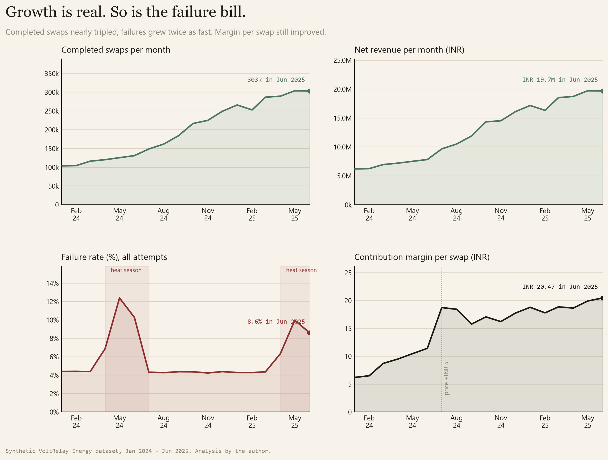
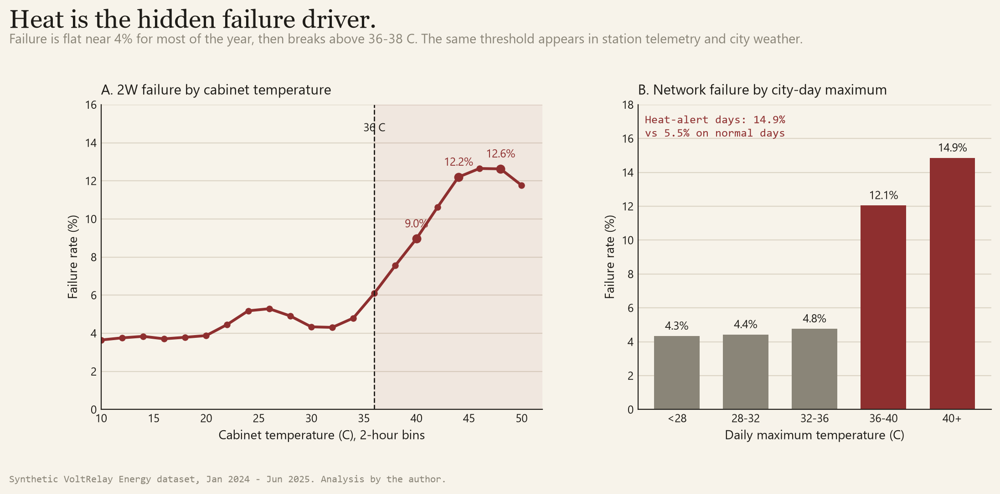
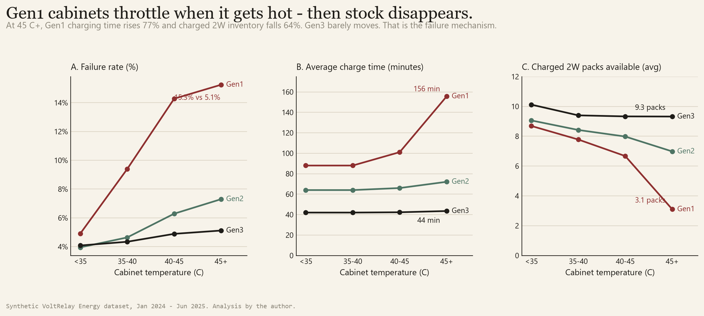
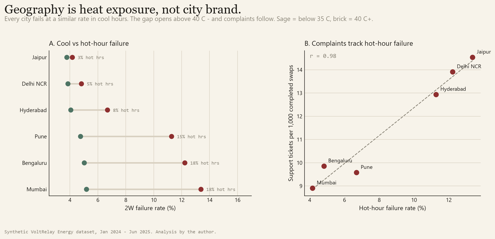
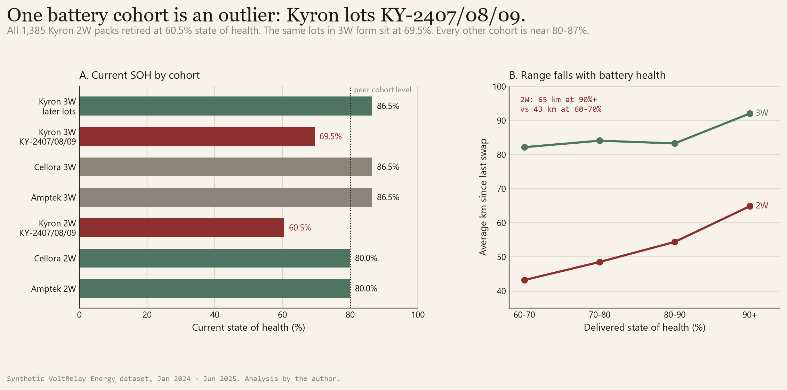
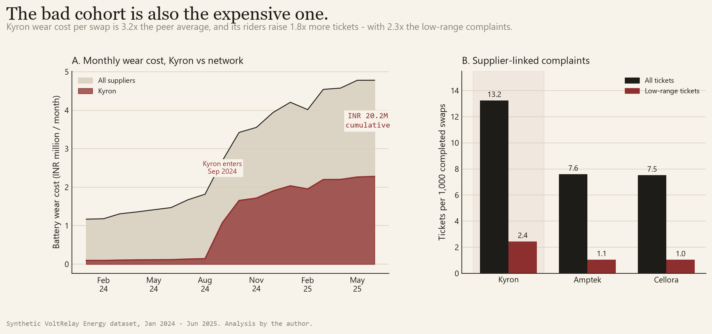
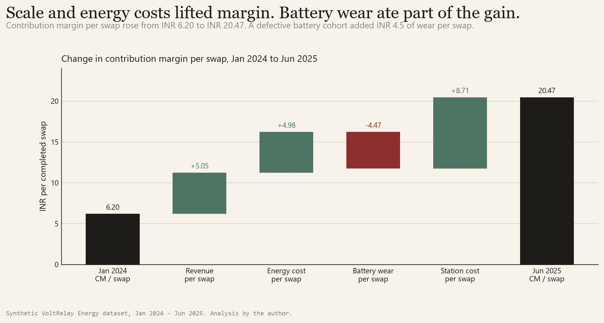
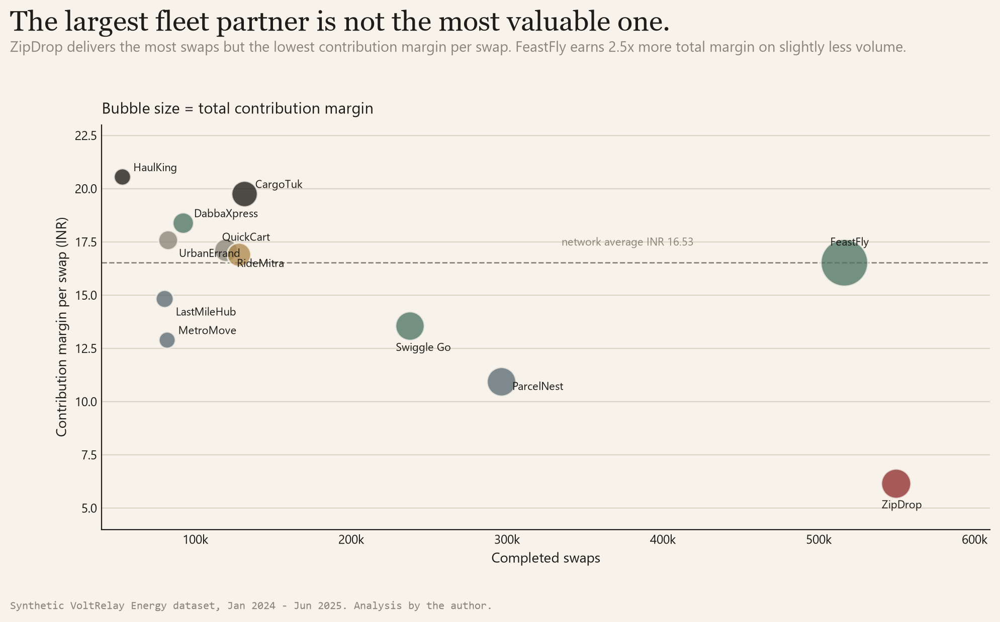
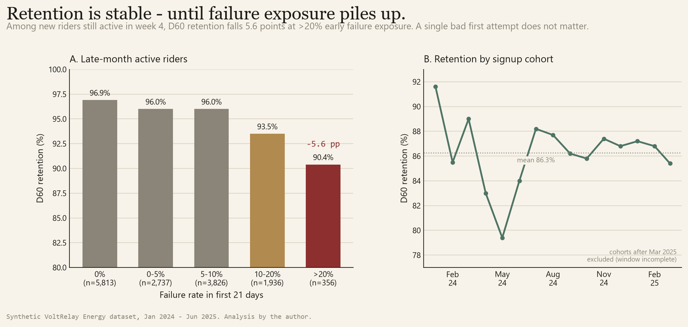
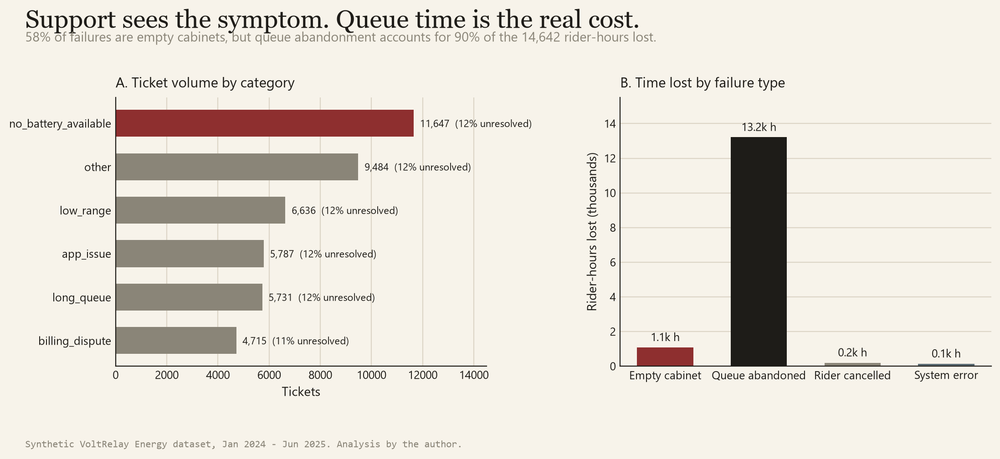

Operations diagnostic · Synthetic dataset · Jan 2024 — Jun 2025
Growth is real.
Make it healthy.
VoltRelay nearly tripled completed swaps — and made six times as many failed attempts. This is the evidence trail from 3.8 million attempts to the three leaks that decide whether the next rupee earns a return.
Jan 2024 → Jun 2025
4,770 → 28,523
to heat above 35°C
Kyron lots vs peers
Volume is not health.
Completed swaps grew 2.9×. Failures grew 6.0×. Revenue per swap barely moved after the July 2024 price rise, and margin improved because fixed cost was spread over more swaps — not because the pricing model got stronger.

What improved
Contribution margin per swap rose from ₹6.20 to ₹20.47. Energy cost fell from ₹22.01 to ₹17.03 and station cost per swap from ₹20.38 to ₹11.68. Total contribution reached ₹59.29M on ₹229.2M revenue — a 25.9% margin.
What broke
Failures rose from 4,770 to 28,523 a month and the failure rate from 4.41% to 8.60%. Battery wear per swap climbed from ₹11.30 to ₹15.77. The network is buying margin with utilisation while service quality deteriorates.
“Four metrics, four different stories. A growth deck would show the first line and stop.” The trade has a ceiling: every extra swap adds wear and queue pressure before it adds profit. The rest of this page follows the three constraints — heat, batteries, partner economics — and the retention cost they create.
The failure is physical.
Heat does not just slow charging. It removes batteries from circulation, lengthens queues, and pushes riders into failed attempts. The effect is measurable, and it is concentrated in first-generation cabinets.



“39,445 excess failures. 17.3% of the total. About ₹2.5M of forgone revenue.” At the station level, 121 of 138 locations with both hot and cool days performed worse on hot days. Same station, same riders, different temperature. The comparison is stratified within vehicle class and peak hour, so the heat effect is not a demand-mix artifact.
The fix is mechanical
Shade and cross-flow ventilation for Gen1 cabinets, charge-current caps during the hottest hours, and pre-cooling before the 12:00–17:00 peak. These are retrofits, not a new network.
Where to start
Rank Gen1 cabinets by hot-day excess failures. Jaipur, Delhi and Hyderabad show the widest city gaps; the top twenty stations carry enough volume to prove the retrofit in one summer.
One supplier, ₹12.7M.
Kyron's 2W packs entered service like any other lot and then wore out roughly three times faster per swap. Every one of its 1,385 two-wheeler packs is now retired.
| Metric | Kyron 2W | Peer 2W |
|---|---|---|
| Wear per swap | ₹30.79 | ₹9.56 |
| Swaps per pack | 402 | 643 |
| Tickets per 1,000 swaps | 13.24 | 7.55 |
| Low-range tickets per 1,000 | 2.44 | 1.04 |
| Average SOH at retirement | 60.5% | still in service |
1,385 Kyron 2W packs retired. Avoidable wear versus peer economics: approximately ₹12.7M.
This is a lot problem, not a chemistry problem.
Kyron's early 3W lots averaged 69.5% SOH while its later 3W lots averaged 86.5%. Same supplier, same chemistry, different manufacturing lots. The 2W failure is specific enough to quarantine at the lot level — KY-2407, KY-2408 and KY-2409 — rather than condemning the category.


“Bad packs do not just cost money. They become a rider's daily range anxiety.” Low-range tickets run 2.44 per thousand swaps on Kyron against roughly 1.04 on peer packs. The support queue confirms what the wear model predicts: the battery is the product, and lot quality is the constraint.
The largest partner is the weakest.
ZipDrop accounts for 549,390 completed swaps — about 15% of the network — at ₹6.17 contribution per swap. FeastFly earns ₹16.54. The network average is ₹16.53.
| Segment | Completed swaps | Revenue / swap | Contribution / swap | Total contribution |
|---|---|---|---|---|
| ZipDrop | 549,390 | ₹48.64 | ₹6.17 | ₹3.39M |
| FeastFly | — | — | ₹16.54 | ₹8.54M |
| Network | 3,586,675 | ₹64.94 | ₹16.53 | ₹59.29M |
Swipe the table to see all columns →


The price rise worked — partly
Revenue per swap added ₹5.05 and energy efficiency added ₹4.98. Wear took back ₹4.47. The remaining ₹8.71 came from spreading station rent and maintenance over more completed swaps; that lever flattens as growth matures.
Peak pricing is an untested lever
The PEAK tariff earns ₹41.29 per swap against ₹19.81 on standard, but it runs only in Bengaluru and Pune across 163,922 swaps. Every other city is a controlled expansion opportunity, not a pricing problem to guess at.
“ZipDrop is not a bad customer. It is an underpriced one.” A volume commitment, a per-swap floor and pass-through of battery wear turn a ₹6.17 contribution into a defensible account. The alternative — letting the discount compound while wear rises — is how growth becomes a subsidy.
Churn is downstream.
Conditioning on late-month activity removes the mechanical link between early volume and retention. Among riders still active in days 22–30, D60 retention falls from 96.9% with no early failures to 90.4% above 20% — a 5.6-point gap.

Exposure, not a single bad day
The measured window is clean: failures in days 0–21, activity in days 22–30 as the sample condition, retention in days 31–60. Riders whose first-ever attempt failed were no less likely to return. It is repeated failure that predicts churn.
The size of the effect
15.6% of active riders experienced more than 10% failures in their first three weeks. In a logistic model controlling for usage, wait time, SOH, city, plan and channel, each additional 10 percentage points of failure exposure carries an odds ratio of 0.64 (95% CI 0.55–0.73; AUC 0.63).
What to watch
D60 retention is stable near 86% across cohorts, then reads 81.7% for April 2025 and 77.5% for May 2025. Those two cohorts have truncated observation windows, so treat the dip as a watch item, not a finding — and recheck it after the heat season.
“Riders forgive a bad day. They do not forgive a bad month.” The retention model cannot prove that failures cause churn — it is observational. It does show that the association survives controls for volume, wait time and rider mix, and that it is concentrated in riders who keep failing.
Support sees the symptom.
44,000 tickets. One in eight unresolved. 16 hours mean resolution. A 3.55 CSAT. The text names the same three failures the operations data finds: no charged battery, long queues and sudden range loss.

No charged battery at the station. I waited twenty minutes and left.Representative rider paraphrase · synthetic comments
The range dropped suddenly. I had to stop twice on the way.Representative rider paraphrase · synthetic comments
Long queue at the swap station. Only one slot was working.Representative rider paraphrase · synthetic comments
My ticket was closed without anyone telling me what was fixed.Representative rider paraphrase · synthetic comments
Read tickets as telemetry
11,647 tickets are tagged “no battery available”; 2,887 of those mention a queue. 6,636 report low range. The top categories map to inventory, heat and battery health — not to agent effort. Use the text to locate the failing station, not to score the support team.
Support is a lagging indicator. By the time a rider writes in, the swap has already failed and the alternative was likely a petrol ride.
Fix the leaks before filling the tank.
Six moves, ranked by evidence and speed to impact. Each has a named owner metric so the next review is about results, not activity.
Cool the Gen1 fleet
17.3% of failures are heat-attributable; 121 of 138 paired stations worsen when hot. At 45°C+, Gen1 cabinets recharge in 156 minutes and fail at 15.3%.
Move: shade, airflow, charge-current caps and pre-cooling at the top twenty Gen1 stations in Jaipur, Delhi and Hyderabad.
Quarantine Kyron lots
Kyron 2W wear is ₹30.79 per swap against ₹9.56 for peers. All 1,385 packs are retired; the avoidable wear bill is about ₹12.7M.
Move: block lots KY-2407, KY-2408 and KY-2409 from dispatch; add capacity, internal-resistance and thermal-rise checks at goods-in.
Reprice ZipDrop
549,390 swaps at ₹6.17 contribution, against ₹16.53 network-wide. Revenue per swap has already fallen from ₹57.48 to ₹48.64.
Move: volume commitment, per-swap floor and battery-wear pass-through at renewal. Protect service levels rather than the discount.
Expand PEAK pricing
PEAK earns ₹41.29 per swap versus ₹19.81 standard, but operates only in Bengaluru and Pune on 163,922 swaps.
Move: six-week pilot in Delhi and Mumbai, capped at four peak hours a day, with off-peak cannibalisation monitored weekly.
Cut queue abandonment
Abandonment is 30% of failures. The 90th-percentile wait is 1,088 seconds; riders lose an estimated 14,642 hours, and about 90% of abandoners never complete that swap.
Move: live wait time in the app, reserve-a-pack, single-slot alerting, and staffing aligned to the 17:00–20:00 peak.
Run station scorecards
Failures concentrate. The same 138 paired stations expose the heat gap, and 58% of all failures are empty cabinets while 30% are abandoned queues.
Move: one weekly scorecard per station combining hot-day failures, queue wait, charged-pack availability and low-range tickets. Retrofit the worst twenty first.
Stop the bleeding
Quarantine Kyron lots. Cap charge current on Gen1 during hot hours. Publish the daily station scorecard. Open the ZipDrop renegotiation.
Prove the mechanism
Retrofit the first twenty Gen1 stations. Launch the Delhi and Mumbai PEAK pilots. Ship live wait times and reserve-a-pack. Go live with goods-in battery testing.
Scale what worked
Roll out retrofits by measured lift. Sign partner terms. Retire the worst remaining packs. Re-run the retention cohort and publish unit economics by station.
Not yet: another station wave
Station cost per swap is falling because volume is spreading fixed cost. Adding cabinets before fixing failure adds fixed cost, adds wear and does not fix the leak. Capacity is the reward for reliability, not a substitute for it.
Not ever: judging support on ticket volume
The ticket mix is an operational signal. Fewer tickets is a good outcome only when failures and range loss fall — otherwise it can simply mean riders stopped bothering to report.
How this was built.
Every figure on this page comes from the provided synthetic dataset. The notebook runs top-to-bottom and regenerates the tables, charts and headline figures.
Data
Eight source tables: 3.8M swap attempts, stations, riders, batteries, fleet partners, city context, hourly station status and 44k support tickets. January 2024 to June 2025, six cities.
Cleaning
Corrected a +330-minute clock error on firmware v3.2.0 (139,490 events), deduplicated offline retries, removed 62,031 test-station events, normalised six city spellings and flagged valid trip distances.
Model
Full contribution margin: revenue − energy − battery wear − station fixed cost per completed swap. Heat baseline stratified at under 35°C within vehicle class and peak hour. Retention uses a fixed 0–21 / 22–30 / 31–60 day window with a logistic model and bootstrap CI.
Limits
Synthetic data; findings are illustrative, not a real company. Observational associations, not causal experiments. Wear uses a median fallback for packs with fewer than 50 cycles. Late-2025 cohort windows are truncated.